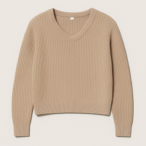

Venda assistida no salão da loja própria
O vendedor fecha a venda onde o cliente está, sem levá-lo ao caixa.
Com o Sales App, cada vendedor vende, cobra e libera o cliente em qualquer canto da loja, apenas com um celular.
Hold here to pay
Just a moment…
Reading the card…
Finishing up…
Payment approved!
$69.90
Order number
2315340993608-1
1 item

1Combined sweater
Color: Light beige Size: L
$69.90
Personal information
Ana Souza
ana.souza@email.com
Delivery
Get it by Mon, Nov 10
Ana Souza 128 Flower Street Los Angeles, CA 90012
Credit card •••• 2999
Três motivos para transformar o celular que sua equipe já usa no seu novo ponto de venda.
Do dia a dia do salão aos picos sazonais e às ativações fora da loja.
O vendedor fecha a venda onde o cliente está, sem levá-lo ao caixa.
Black Friday e datas comemorativas, escalando pontos de venda sem comprar equipamento extra.
Estandes e eventos organizados pela própria rede de lojas.
Novos pontos dentro da rede própria, sem esperar o ciclo de compra de hardware.
Veja o Tap on Phone funcionando dentro do Sales App — do checkout à confirmação, sem sair do fluxo que sua equipe já usa.
O que as equipes de operação e tecnologia costumam perguntar antes de ativar.
Para ativar o Tap on Phone, é necessário instalar e configurar o VTEX Sales App e contratar a Cielo, informando que vai usar o Tap on Phone em conjunto com o Sales App. As etapas completas de contratação estão na documentação (em breve, pública). Fale com seu CE da VTEX para garantir o suporte correto durante a ativação.
Depois de ativado, o Tap on Phone aparece como mais um meio de pagamento dentro do fluxo de checkout do Sales App — não é um app à parte.
No checkout, selecione "Tap on phone crédito" ou "Tap on phone débito" como meio de pagamento e a quantidade de parcelas; a tela de aproximação carrega automaticamente; peça para o cliente aproximar o cartão; aguarde o processamento.
Com o pagamento aprovado, o comprovante é gerado na hora e pode ser compartilhado direto com o cliente ou impresso.
Ao iniciar uma nova venda, a tela de pedido concluído confirma que está tudo certo antes de seguir.
O Tap on Phone funciona em smartphones Android com versão 12 ou superior e suporte a NFC (tecnologia de aproximação) — é essa combinação que permite transformar o celular em um terminal de pagamento. A maioria dos aparelhos Android intermediários e avançados já atende a esse requisito, como Samsung Galaxy A06, Samsung Galaxy A15, Motorola Moto G84, Xiaomi Redmi Note 13, Android 13, POCO X6 e tablets.
A adquirência é feita pela Cielo, com taxas e contratação diretamente com a adquirente. Isso significa que a contratação do Tap on Phone depende de um contrato com a Cielo, além da configuração no Sales App — não é possível usar outra adquirente nesta fase.
Sim, é possível parcelar em até 12x, de acordo com as suas regras de negócio. A configuração do parcelamento é feita pela VTEX diretamente no provedor de pagamento, mediante abertura de um ticket específico para configurar o Tap on Phone — não é uma configuração self-service.
Não. O próprio smartphone Android do seu time já funciona como terminal de pagamento — não há necessidade de comprar, homologar ou distribuir nenhum equipamento adicional. É isso que permite escalar a operação em poucos dias em vez de meses.
As taxas são negociadas e contratadas diretamente com a Cielo. A solução é disponibilizada com a solução de Sales App sem custo adicional.
Hoje funciona direto, sem ação manual, para venda no débito, crédito à vista e parcelado, em lojas próprias com CNPJ único, usando Android 12+ e adquirência Cielo.
Três pontos dependem de ação manual: parcelamento (configuração feita pela VTEX no momento da ativação via ticket), cancelamento de venda (feito pelo portal Cielo Conecta, não integrado ao Sales App) e o recomendável de manter outro meio de pagamento como fallback.
Ainda não é possível: split payment, restringir bandeiras aceitas, e atender franquias ou redes com múltiplos CNPJs.
Sim — a documentação está disponível neste documento. A versão pública ainda está em breve.